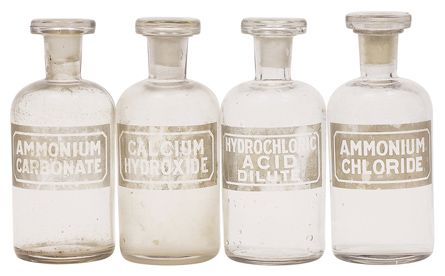

Module 8—Acid-Base Equilibrium
Lesson 3—Brønsted-Lowry Theory

© 2008 Jupiterimages Corporation
 Get Focused
Get Focused
The concept of acids you currently work with involves a reaction with water to produce hydronium ions. As you know from earlier in this module, bases dissociate to produce hydroxide ions. Those descriptions work well for substances like hydrochloric acid and calcium hydroxide, but how do you explain the acidic properties of the ammonium ion and the basic properties of the carbonate ion?
Ammonium is commonly used in nitrogen-based fertilizers, and carbonate is one of many chemical components in soil—especially soils in Alberta. What is necessary to better understand the acidic and basic properties of these substances? Would this understanding help you to predict changes that might occur to soil as a result of soil management?
Consider the following questions as you complete Lesson 3:
- What occurs during a chemical reaction between an acid and a base?
- How does the Brønsted-Lowry theory support what is known about the equilibrium of aqueous acids and bases?
- How do conjugate acid-base pairs form an equilibrium system?
 Module 8: Lesson 3 Assignment
Module 8: Lesson 3 Assignment
There is no assignment for this lesson.
You must decide what to do with the questions that are not marked by the teacher.
Remember that these questions provide you with the practice and feedback that you need to successfully complete this course. You should respond to all the questions and place those answers in your course folder.